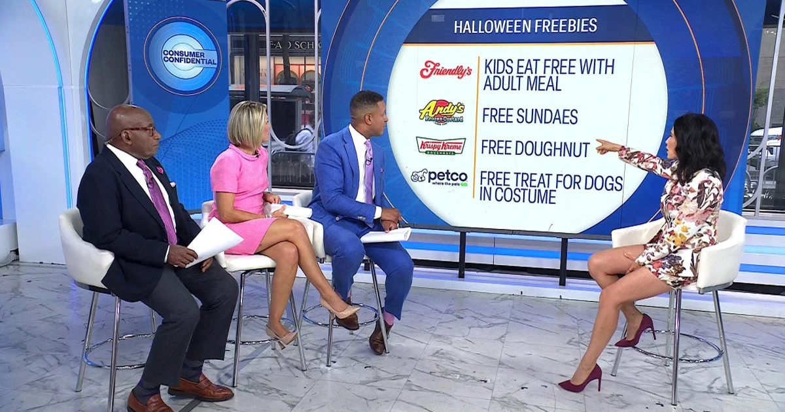

MARKET CONNECTION
SOURCE 015
Seagate Stock and Western Digital Tumble as Investors Worry AI Shortage Will Ease - Barron's
MORE REPORTING
Continue through the source set
Dynamic visual
Politico · 2026-10-02 20:23:00Z
DOJ will not reopen criminal probe of Powell, Blanche says - Politico
VIEW STORY ↗Dynamic visual
Bloomberg · 2026-10-03 16:28:40 UTC
Pointed! Bloomberg's Weekly News Quiz For Risk-Takers
VIEW STORY ↗Dynamic visual
Bloomberg · 2026-10-03 15:15:35 UTC
Fake Jobs Put Job Seekers at Risk of Identity Theft
VIEW STORY ↗Dynamic visual
Bloomberg · 2026-10-03 13:00:00 UTC
Larry Ellison Risk Exposed by Paramount and Oracle Debt Binges
VIEW STORY ↗
CNBC · 2026-10-01 13:30:37 UTC
October Freebies: Doughnut, Hockey, Knife Skills Course, More
VIEW STORY ↗Dynamic visual
The Wall Street Journal · 2026-10-03 00:00:00Z